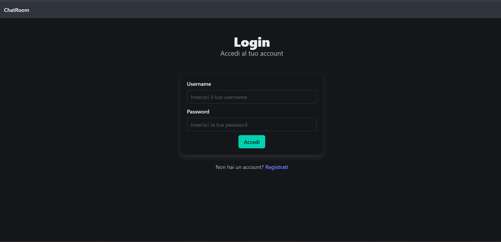
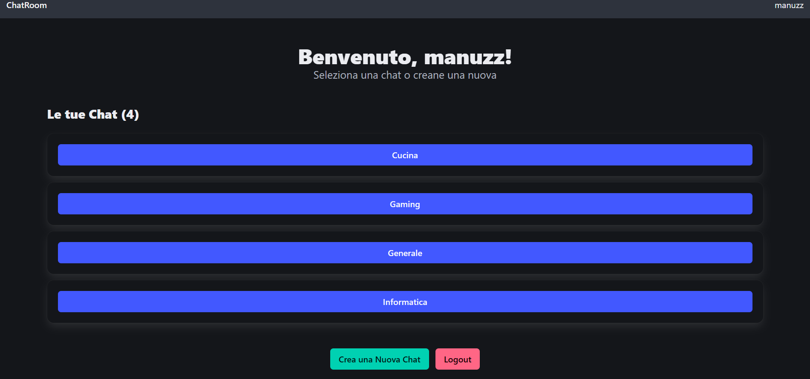
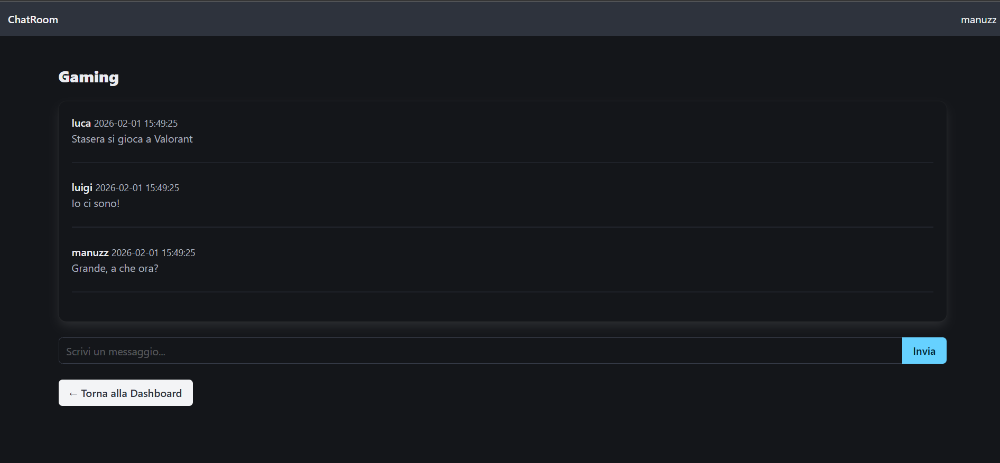

Ho sviluppato un'applicazione web di messaggistica chiamata ChatRoom, scritta interamente in PHP con approccio monolitico, utilizzando Bulma come framework CSS e MySQLi per la gestione del database. L'applicazione permette agli utenti di registrarsi e autenticarsi, creare chatroom, scambiare messaggi e invitare altri utenti a partecipare, con un meccanismo di invito riservato al creatore della stanza.
Dal punto di vista della sicurezza, ho implementato l'hashing delle password con password_hash() e i prepared statements per prevenire SQL injection. È stata un'esperienza che mi ha coinvolto, perché mi piacciono le sfide e mi piace mettermi alla prova: riuscire ad applicare concretamente ciò che avevo studiato in un'applicazione funzionante è stato gratificante, e i primi problemi che ho incontrato sono riuscito a risolverli senza particolari difficoltà.
Ecco alcune foto della schermata dell'applicazione.


